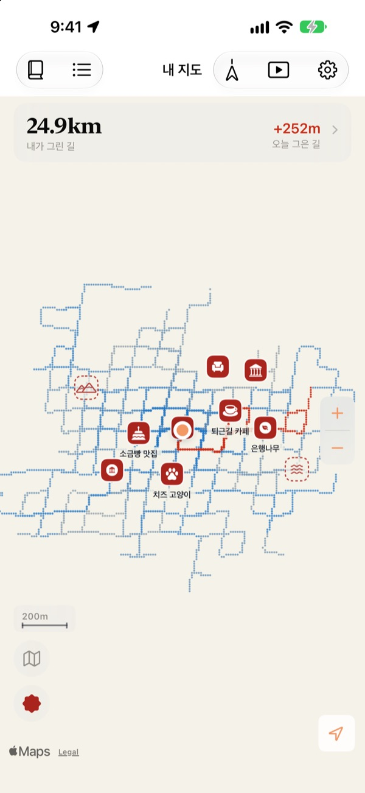
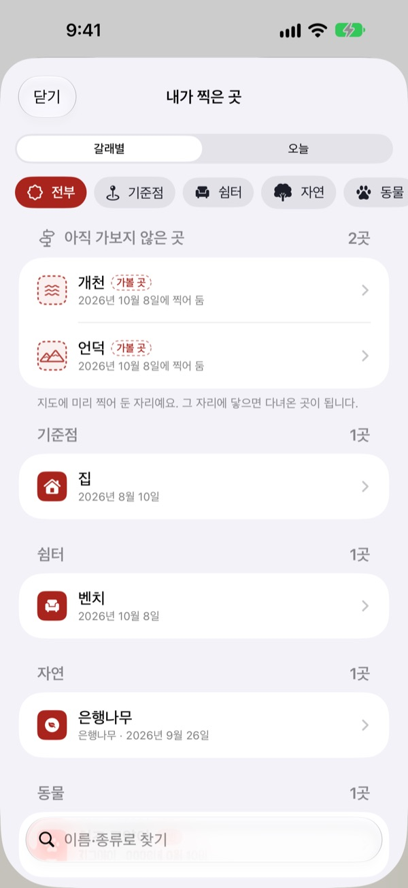
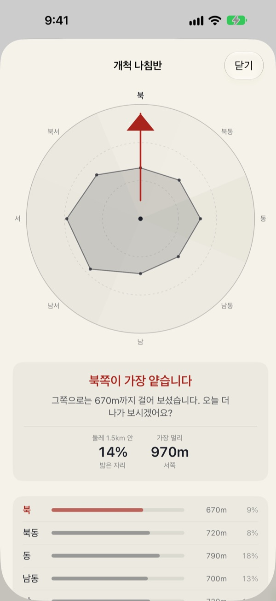
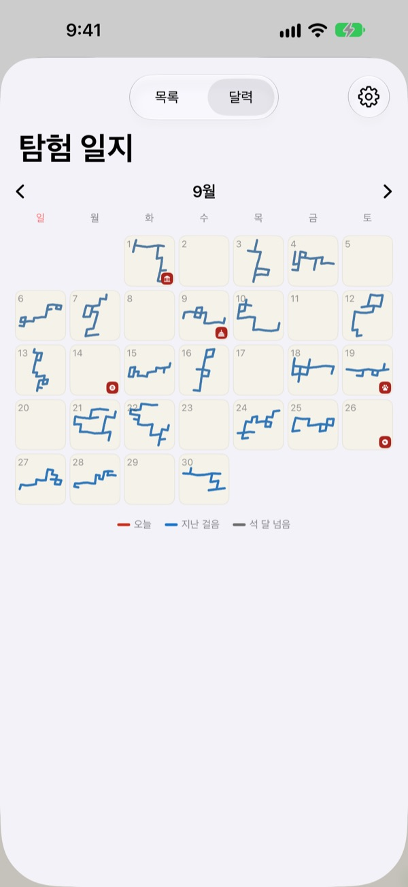

걸어야만
채워지는 지도
백지 한 장에서 시작합니다. 두 발로 지난 자리만 한 점씩 찍히고, 같은 길을 백 번 걸어도 지도는 넓어지지 않습니다. 넓히려면 새 길로 가야 합니다.
모든 기능이 무료이고 광고가 없습니다.

직접 걸어 보세요
종이 위를 손가락이나 마우스로 끌면 걸은 것으로 칩니다. 파란 점은 예전에 걸은 길입니다. 그 위를 걸을 때와 처음 가는 쪽으로 걸을 때 오늘 그은 길이 어떻게 달라지는지 보세요.
늘 같은 길만 걷고 있지 않나요?
만보기는 걸음 수를 세지만 어디를 걸었는지는 묻지 않습니다. 집과 역 사이를 오가도 숫자는 채워지니, 바로 옆 골목은 몇 년째 모르는 채로 지나갑니다. 벅뚜벅뚜는 처음 걷는 길만 세어서, 오늘은 한 블록 돌아가 볼 이유를 만들어 줍니다.
가본 곳과 가볼 곳에 도장을
지금 선 자리에서, 또는 지도를 길게 눌러 원하는 자리에 도장을 찍습니다. 갈래별로 고르는 스탬프가 212가지입니다.
걸어 본 적 없는 자리에 찍은 도장은 가볼 곳으로 남았다가, 실제로 닿으면 다녀온 곳으로 바뀝니다. 가게 간판을 찍으면 배경을 오려 그 자리만의 스티커로 세워 줍니다.

다음 산책은 덜 걸은 쪽으로
개척 나침반이 지금 선 자리 둘레를 여덟 방위로 나눠, 어느 쪽을 가장 덜 걸었는지 가리킵니다.
오늘의 발자취에서는 오늘 들른 곳이 시간 순서대로 서고, 자리 사이를 얼마나 걸었는지 적힙니다.

날마다 걸은 모양이 남습니다
달력은 숫자 대신 그날 걸은 모양을 그립니다. 날마다 글과 사진으로 일기를 남기고, 그날 걸은 길 중 처음 걸은 길이 얼마였는지도 봅니다.
기간을 정하면 내 지도가 그려지는 과정을 영상으로 보고 내보낼 수 있습니다.

시작은 세 단계면 됩니다
- 1
앱을 엽니다
아무것도 없는 종이 한 장이 펼쳐집니다.
- 2
위치를 허용합니다
'항상 허용'과 동작 및 피트니스를 켜면 앱을 열지 않아도 기록됩니다.
- 3
걸어 나갑니다
처음 가는 골목일수록 지도가 넓어집니다.
지도 읽는 법
- 붉은 점
- 오늘 걸은 자리
- 남빛 점
- 지난 걸음. 자주 지난 자리일수록 짙어집니다
- 잿빛 점
- 석 달 넘게 다시 밟지 않은 자리. 지워지지 않고 빛만 바랩니다
- 점선 도장
- 가볼 곳. 그 자리에 닿으면 다녀온 곳이 됩니다
- 내가 그린 길
- 지금까지 처음 걸은 길의 길이
- 오늘 그은 길
- 오늘 걸은 길 중 처음 걸은 길의 길이
- 모아 보기
- 설정에서 개척 나침반, 오늘의 발자취, 그려지는 것 보기를 엽니다
지도는 먹 지도와 그림지도 중에서 고를 수 있습니다.
모든 기능이 무료입니다
무료
- 걸은 자리만 채워지는 지도와 처음 걷는 길 재기
- 212가지 스탬프와 간판 스티커
- 개척 나침반과 오늘의 발자취
- 달력, 글과 사진으로 쓰는 일기
- 지도가 그려지는 영상 내보내기
- 홈 화면, 잠금 화면 위젯
- iCloud로 기기 사이 이어 쓰기
개발자 응원하기
- 설정에서 원하는 만큼 작은 팁을 보낼 수 있습니다
- 팁은 기능을 열지 않습니다. 보내지 않아도 똑같이 씁니다
광고도, 구독도 없습니다.
자주 묻는 질문
걸었는데 지도에 찍히지 않아요.
설정 앱 > 벅뚜벅뚜 > 위치에서 '항상'을 고르고, 동작 및 피트니스를 켜 주세요. 그래야 앱을 열지 않고 걸어도 기록됩니다. 앱 설정의 기록 방식에서 배터리를 아끼는 쪽을 골랐다면 앱을 열고 걷기 시작해야 남습니다. 정확도가 낮은 위치는 저장하되 지도에는 그리지 않습니다.
차나 지하철로 지난 길도 기록되나요?
아니요. 동작 데이터와 이동 속도를 보고 걷거나 뛴 구간만 그리고, 차량으로 보이는 구간은 뺍니다. 상황에 따라 조금 틀릴 수 있습니다.
같은 길을 매일 걷는데 지도가 넓어지지 않아요.
그게 이 지도의 규칙입니다. 30m 안을 이미 걸었다면 같은 길로 보고, 처음 걷는 길만 내가 그린 길에 더합니다. 길 건너편 인도도 같은 길입니다. 개척 나침반이 덜 걸은 쪽을 알려 줍니다.
내 위치 정보가 밖으로 나가나요?
개발자에게는 보내지 않습니다. 걸음, 도장, 일기, 사진은 기기와 내 개인 iCloud에만 담기고 개발자는 볼 수 없습니다. 익명 사용 통계에는 위치 좌표, 일기 글, 장소 이름, 사진을 넣지 않습니다. 좌표를 장소 이름으로 바꿀 때 Apple 지도 서비스를 씁니다. 자세한 내용은 아래 개인정보처리방침에 있습니다.
기기를 바꾸면 기록이 옮겨지나요?
네. 새 기기에서 같은 Apple 계정으로 로그인하고 iCloud를 켜 두면 걸음, 도장, 일기, 사진이 그대로 따라옵니다.
도장이나 사진을 지우고 싶어요.
도장은 내가 찍은 곳 목록에서 지울 수 있고, 일기의 사진은 길게 눌러 지울 수 있습니다. 걸은 길과 일기를 한 번에 지우는 기능은 앞으로 만들 기능에 올라 있습니다.
위젯은 어떻게 다나요?
홈 화면을 길게 누르고 편집 > 위젯 추가에서 벅뚜벅뚜를 고르세요. 잠금 화면은 길게 누른 뒤 사용자화에서 위젯을 더할 수 있습니다. 홈 화면에는 오늘 그린 길의 모양과 길이가, 잠금 화면에는 오늘 그은 길이가 나옵니다.
어떤 기기에서 쓸 수 있나요?
iOS 17.0 이상의 아이폰에서 쓸 수 있습니다.
문의나 제안은 어디로 하나요?
앱 설정에서 피드백을 보내거나 아래 메일로 보내 주세요. 최대한 빨리 답장드립니다.
궁금한 점이나 의견은 leeo@kakao.com로 보내 주세요.